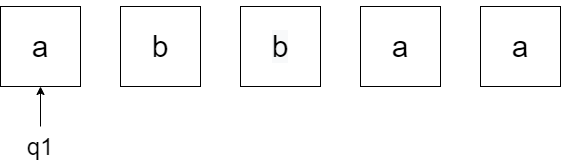
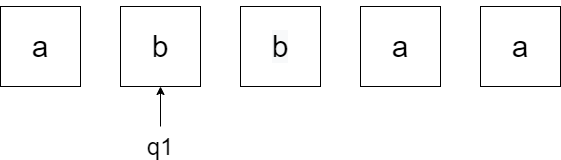
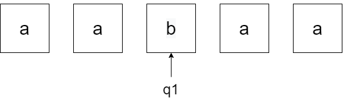
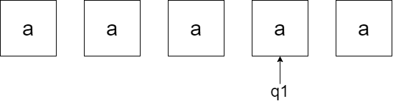
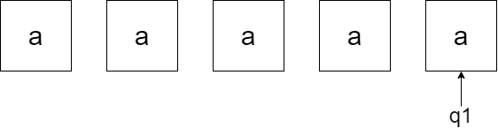

Apa itu
Mesin Turing?
Mesin Turing adalah sebuah komputasi model matematika yang menetapkan mesin abstrak, yang memanipulasi simbol pada sebuah garis tape berdasarkan pada tabel aturan.

Bagaimana Prinsip Kerja Mesin Turing?
01
Lihat state semula dan simbol yang ditunjuk head
02
Berdasarkan fungsinya tentukan :
- Tentukan state berikutnya
- Lakukan penulisan ke tape
- Gerakkan head ke kanan dan ke kiri
03
Jika pasangan state dan simbol yang ditunjuk head tidak ada lagi fungsi transisinya, maka mesin turing berhenti
04
Jika mesin turing berhenti di state final berarti input diterima. Begitupun sebaliknya, jika berhenti di bukan final state maka input ditolak.
Contoh Soal Mesin Turing
Tentukan status string input abbaa pada mesin Turing, apakah diterima atau ditolak?
01
Pita string input yang akan dibaca : abbaa
Fungsi transisi δ(q1, a) = (q1, a, R) menyebabkan head bergerak ke kanan.
02
fungsi transisi δ(q1, b) = (q1, a, R) menyebabkan head menulisalalu bergerak kekanan.
03
fungsi transisi δ(q1, b) = (q1, a, R) menyebabkan head menulis a lalu bergerak ke kanan
04
fungsi transisi δ(q1, a) = (q1, a, R) menyebabkan head bergerak ke kanan.
05
fungsi transisi δ(q1, a) = (q1, a, R) menyebabkan head bergerak ke kanan
06
Head menunjuk B, karena bagian pita yang belum ditulisi dianggap berisiB.Fungsi transisi δ(q1,B) = (q2,B, L), menyatakan head bergerak ke kiri
07
tidak ada transisi lagi dari state q2, mesin Turing akan berhenti.Karena state q2 termasuk state akhir (final state), berarti input abbaa diterima.
About Me.